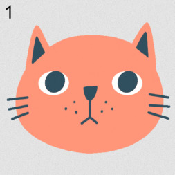
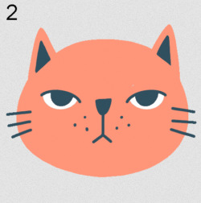
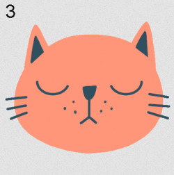
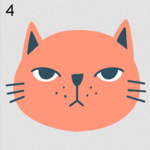

· Per comprendere il procedimento di rappresentazione digitale di un filmato prendiamo come modello una pellicola cinematografica:
·una sequenza di immagini statiche (fotogrammi)
·una o più bande per il sonoro.
· L'occhio umano non riesce a percepire come distinte due immagini separate da meno di un trentesimo di secondo.
· Ogni singolo fotogramma viene digitalizzato utilizzando i procedimenti visti per la rappresentazione delle immagini
· La colonna sonora subisce lo stesso processo di conversione che abbiamo incontrato trattando i suoni digitali.
Per Fissare Meglio Le idee...
Ecco una piccolo demo di come siamo passi dalle immagini ai video...




FOTOGRAMMI
Caratteristiche
Video analogico
Video: il concetto nasce con l’invenzione della televisione.
·Risoluzione: espressa in linee
·Frequenza:
– pellicola 24fps
–standard televisivi classici:
•PAL 25fps
•NTSC 30 fps
–Scansione interlacciata.
Video Digitale
Dai nastri a CD e DVD.
·Risoluzione (orizzontale e verticale): espressa in pixel
·frequenza: espressa in fps
·rapporto d’aspetto: rapporto tra larghezza e altezza di un’immagine
Container E Codec
Container
contenitore che contiene al suo interno audio e video del filmato
·Il container dà l’estensione al file
Codec
metodi di compressione di audio e video
Inoltre
Per vedere un filmato il player deve supportare:
·Il container
·Il codec video
·Il codec audio utilizzati da quel file
TEST
Per Completare il percorso, devi prima rispondere alle domande seguenti:
·una pellicola cinematografica è formata da: fotogrammi e bande per il sonoro(SI O NO)?
·il video analogico ha una risoluzione espressa in...?
· il video digitale ha una frequenza espressa in...?
·Come si chiama il contenitore che contiene al suo interno audio e video del filmato?
Benvenuto!
Gentile, Studente...ti diamo benvenuto nella parte "Video" del nostro percorso!.
ATTENZIONE!
Gentile, Studente...sei sicuro di voler continuare con il test?(NON potrai ritornare indietro)